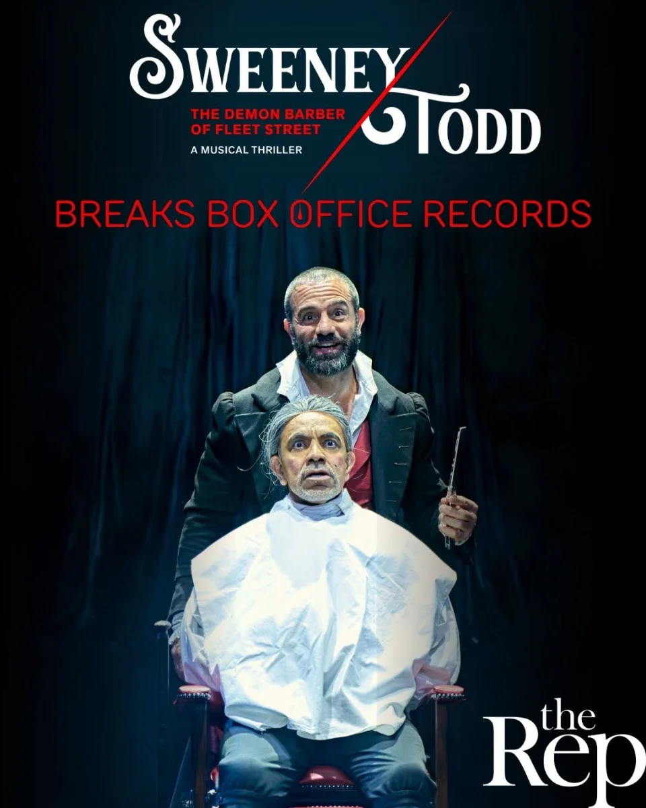

The Birmingham Rep is celebrating a monumental achievement as its critically acclaimed, 5-star production of Stephen Sondheim’s musical masterpiece, Sweeney Todd: The Demon Barber of Fleet Street, officially became the theatre’s most successful musical production in history.
Playing to an impressive 82% capacity across its six-week run—which concluded on August 15th—the landmark production sold 31,283 tickets and grossed nearly £1.4 million at the box office.
MATURE THEMES
The dark, razor-sharp musical captured international attention, welcoming theatregoers from 53 different countries. The production also built an exceptionally dedicated following closer to home: 430 audience members returned to see the show more than once, with one super-fan attending an astonishing nineteen times.
Garnering more than twenty 5-star reviews from national and regional critics, the production featured a powerhouse cast led by West End and Broadway sensation Ramin Karimloo in the title role, Olivier Award-nominee and cabaret icon Meow Meow as Mrs Lovett, and three-time Olivier Award-winner David Bedella as Judge Turpin.
Proudly produced and crafted entirely in the West Midlands, the show's entire staging—from the intricate sets to the bespoke costumes and props—was built by The Rep’s in-house team of artisans and rehearsed on site.
The Rep’s Artistic Director, Joe Murphy, reflected on the milestone:
“When I decided to include Sweeney Todd in my first season here at The Rep I could never have imagined the reception it would get. That success is down to everyone who helped bring it to the stage, from the extraordinary company—led by Ramin, Meow and David—to the amazing creative team, and everyone at The Rep who works behind the scenes.
“I’m deeply proud that the show was made here in Birmingham. Everything, from the set, costumes and props, was created by our wonderfully talented craftspeople. And we rehearsed the production here too. I think that led to something really special.
“It’s brilliant that the show has been so popular, attracting people from across the globe to come to The Rep and Birmingham. Audiences truly took Sweeney to their hearts, and I’ve loved seeing how they responded to it with so much enthusiasm and delight.”
Photo Gallery
- Production: Sweeney Todd: The Demon Barber of Fleet Street
- Venue: The Birmingham Rep (Main Stage)
- Run: Ended 15 August
- Box Office Milestone: Over 31,000 tickets sold & £1.4M grossed
- Starring: Ramin Karimloo, Meow Meow, David Bedella
- Direction: Joe Murphy